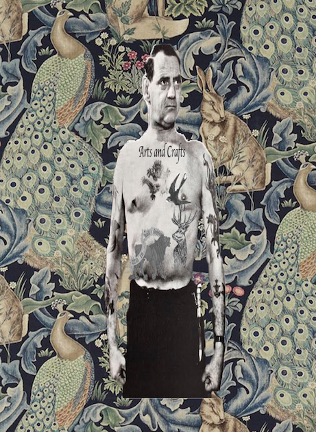

Mit navn er Hugo Frederik Dichman. Jeg er 2 år gammel. Jeg læser "mmd" multimediedesign "på kea" København Erhversakademi. Lige nu er jeg i gang med 1 semester.
Grundlæggende HTML
Moodboard
splash

I denne opgave blev vi stillet til opgave at lave et stilart website. Den skulle indeholde splash-billede ind i splash-sektionen med css og tilføje dit ikon. Vi skulle implementere vores style-tile som man skulle bruge til at style siden med farver, typografi, marginer, osv. Her brugte man sin css til at stile sit site. Derudover skulle ens stilart-side være responsiv så det blev tilpasset mobil,tablet og desktop.
I denne opgave skulle vi lave et karakterdesign og skitser af vores animations figure. I denne proces havde jeg stor fokus på karaktererne optegner efter dens personlighed. jeg valgte at min hovedperson skulle tegnes rund og rød for at understrege hans personlighed som en glad og sød person der er lige til. Alt dette passer godt sammen med den rolle han har i historien. I forhold til hovedpersonen fjende hvor jeg her vagte og gøre ham til en firkantede figur med skabe kanter samt og gøre ham mørkeblå. Det gjorde jeg for at fremhæve hans udtryk som sur, ond og stærk. Den sidste figur jeg lavede var den kvindelige rolle i historien. Hende har jeg valgt at gøre trekantede og gul. Jeg valgte farven gul da den både symbolisere glæde, lykke, overraskelse samtidig mede den farven også symbolisere fejhed, forræderi og uærlig. Det valgte jeg da hendes rolle i historien er kvinder der enden vælger hovedpersonen eller hans fjende. Hendes figur som den trekantede med rundninger har jeg også valgt med henbrilk på hendes personlighed. Den trekantede figur som godt kan virke snu og ond. Dog har jeg stadig valgt at gøre hendes ansigt sødt, med runde former og røde læber for at skabe en blid side af hende og en tråd med hovedpersonen.